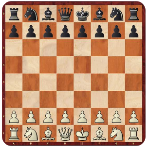
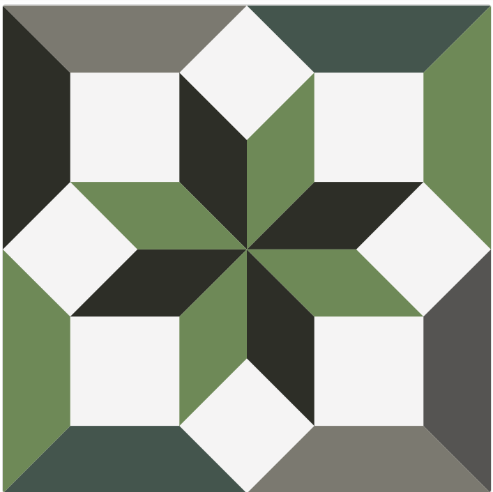

Missão 5 - Em busca dos quadriláteros
O que é um Quadrilátero?
Um quadrilátero é um polígono plano que possui quatro lados, quatro vértices e quatro ângulos internos. A soma de todos os seus ângulos internos é sempre igual a \(360^\circ\).
Em qualquer quadrilátero convexo, sempre a soma dos ângulos internos será igual a 360º.
Por exemplo:
- Um tabuleiro de xadrez, que possui 8 quadrados de cada lado, é um quadrilátero?

- A tela de um televisor ou de um computador, que possui 4 lados, pode ser considerada um retângulo?
- O formato de uma pipa pode ser um losango e também considerado um quadrilátero?
.jpeg)
- Neste ladrilho abaixo, temos vários quadriláteros: trapézios, paralelogramos, quadrados e losangos. A figura resultante do ladrilho é um quadrilátero e, em especial, um quadrado?

As respostas para todas essas perguntas são sim. Qualquer figura que possua quatro lados é um quadrilátero.
Chegou a hora de conhecer as fórmulas secretas de área dos quadriláteros:
.png)
E de maneira bem direta, temos:
Perímetro
➜
É a soma de todos os lados da figura.